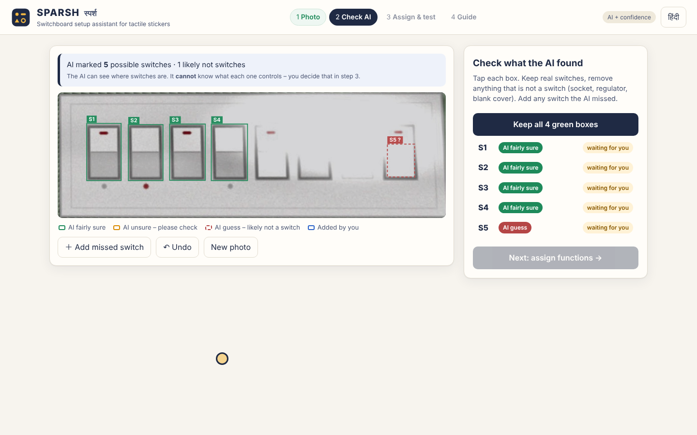
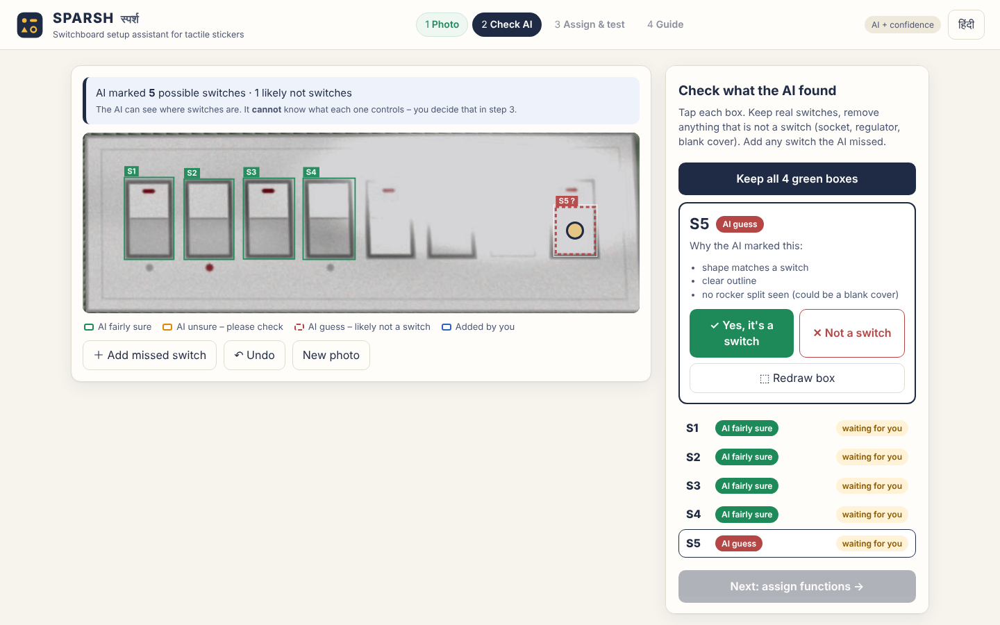
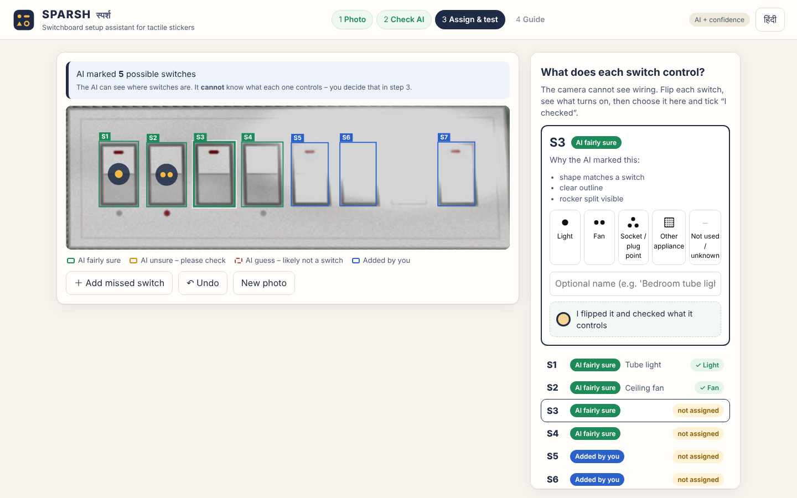
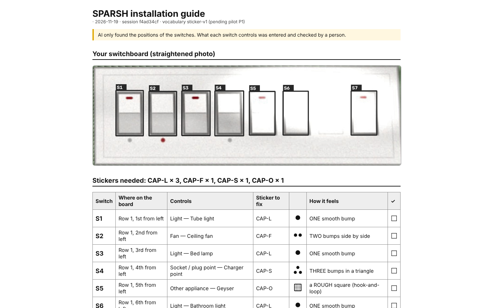

SPARSH
स्पर्श · touch
Any switchboard, readable by touch.
BITS F364 · Human-AI Interaction · BITS Pilani
Walk into a room you've never been in.
Find the fan. With your eyes closed.
Every switch feels the same. So people guess, or ask for help.
Why this matters
≈ 4.8 M
blind people in India
Vashist et al., PLOS ONE 2022 (national survey, extrapolated)
Late
most lose sight later in life, so braille can't be assumed
cataract ≈ 2/3 of blindness; blindness linked to age and illiteracy (same survey)
• • •
bump dots mark a spot, but they don't mean anything
all 16 blind participants used tactile markers (Turkstra et al., Sci. Rep. 2025)
India's accessibility guidelines set switch height and contrast; we found nothing on telling what a switch does.
Four stickers you can buy.
One code for every board.
Off-the-shelf bump stickers + hook-and-loop squares · no bar (ISO 24503: bar = stop) · refined from users' touch errors in pilot P1
The hard part: which switch runs what?
That's hidden in the wiring. No photo can show it.
So a helper takes one photo. The AI finds and numbers the switches…
…and says honestly when it is unsure, and why.




AI finds where. People decide what.
The helper flips each switch, chooses what it controls, ticks "I checked", and prints a sticker guide in English or हिंदी.
No phone. No internet. No power.
Just touch.
What we're testing, with real users
PILOT P1
Can people tell the stickers apart?
confusion matrix → refined code
STUDY A
Faster, more accurate than a plain board?
time · accuracy · confidence
STUDY B
Bare AI vs AI showing confidence
do helpers catch seeded AI errors?
STUDY C
New layouts?
does the code transfer?
SPARSH
Team SPARSH · BITS Pilani · BITS F364 Human-AI Interaction